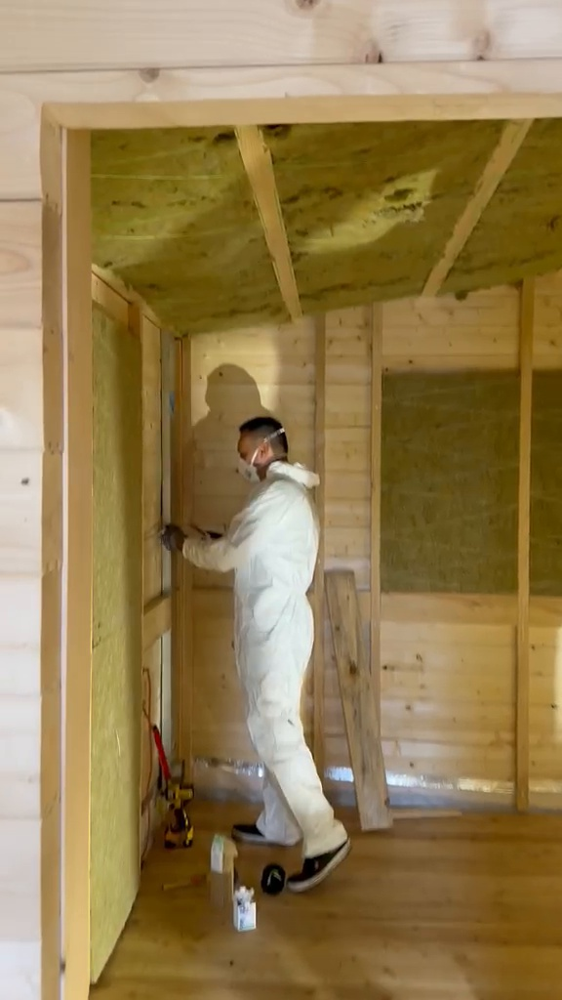
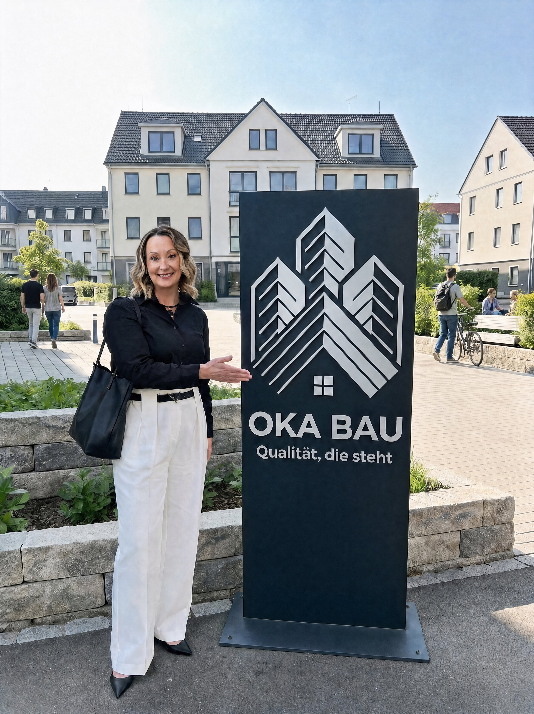

Innenausbau & Trockenbau
Wände, Decken, Verkleidungen und Ausbauarbeiten sauber koordiniert.
↗Innenausbau, Renovierung und Objektservice in Augsburg – zuverlässig aus einer Hand.
Wände, Decken, Verkleidungen und Ausbauarbeiten sauber koordiniert.
↗Von der Vorbereitung bis zum fertigen Raum – strukturiert und zuverlässig.
↗Saubere Untergründe, präzise Verlegung und stimmige Abschlüsse.
↗Montage, Anpassung und saubere Anschlüsse für Bestand und Neubau.
↗Detailarbeiten, Silikon- und Anschlussfugen sowie Montageleistungen.
↗Laufende Objektbetreuung, kleine Instandhaltungen und Reinigung.
↗Wir kümmern uns um die Details, damit Abläufe klar bleiben und das Ergebnis überzeugt.

Trockenbau, Verkleidungen, Decken und Innenraumlösungen mit sauberer Vorbereitung und präziser Ausführung.
Bestehende Räume werden strukturiert überarbeitet – vom Untergrund bis zum fertigen Finish.
Koordinierte Badsanierung, Fliesen- und Oberflächenarbeiten für ein stimmiges Gesamtbild.
Türen, Fenster, Leisten, Fugen und Montagearbeiten werden sauber in den Projektablauf integriert.
Hausmeisterservice, Reinigung und kleine Instandhaltungen für private und gewerbliche Objekte.

„Gute Arbeit beginnt für mich mit klaren Absprachen. Was wir zusagen, setzen wir sauber und verlässlich um.“Katherina KlingDirektorin · OKA Bau
Keine Stockbilder. In den Projektkarten sehen Sie ausschließlich echte Videoaufnahmen unserer Arbeiten.
Die häufigsten Fragen zu Leistungen, Ablauf und Einsatzgebiet.
Kontakt aufnehmen ↗Innenausbau und Trockenbau, Renovierung und Badsanierung, Boden und Leisten, Türen und Fenster, Montage und Fugen sowie Hausmeisterservice und Reinigung.
Ja. Wir unterstützen private Renovierungsprojekte ebenso wie gewerbliche Objekte und Hausverwaltungen.
Der Schwerpunkt liegt in Augsburg und Umgebung. Den genauen Einsatzort klären wir bei Ihrer Anfrage.
Sie nennen uns Objekt, Leistung und Terminrahmen. Danach stimmen wir den Umfang ab und planen die nächsten Schritte.
Telefonisch unter +49 821 65085943 oder per E-Mail an info@okabau.de.